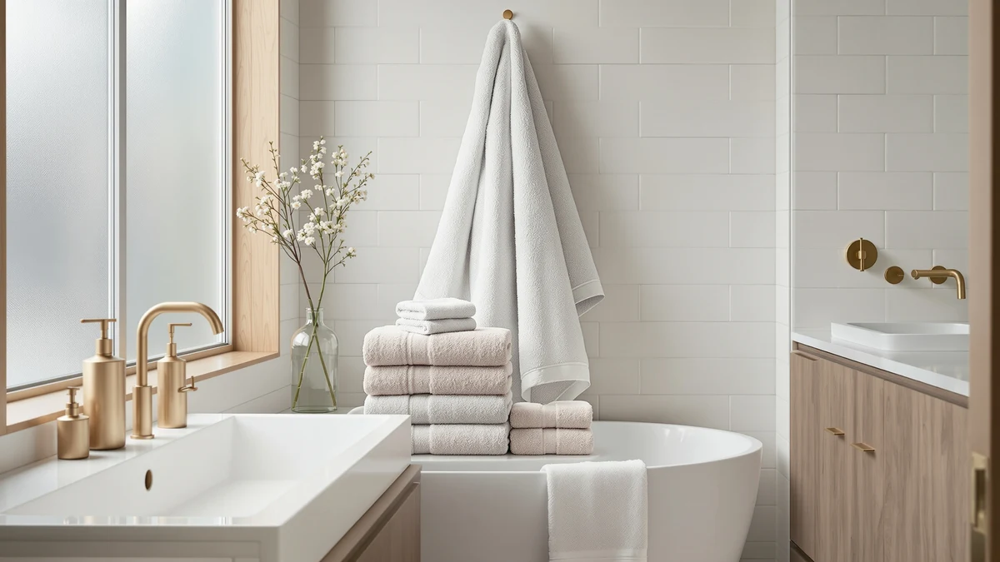

The Best Bath Towels in Bulk: Wholesale Picks for Gyms, Salons & Spas (2026)
Prices and picks verified as of September 2026. Independent, reader-supported reviews.


Quick Answer
Our pick for the best bath towels in bulk is the ZUPERIA White Bath Towels Bulk set at $39.99, a full 24-by-48-inch 100% cotton towel priced for gyms, spas, and salons. Need a cheaper gym towel or a full multi-piece household set instead? We cover both further down this guide.
Our pick: ZUPERIA White Bath Towels Bulk, $39.99 Check Price on Amazon
Bottom line: our top pick is the ZUPERIA White Bath Towels Bulk 12 Pack at $39.99. The best budget option is the ZUPERIA White Bath Towels Bulk 12 Pack at $32.99.
Things to Know Before You Buy
- The best bath towels in bulk are 100% cotton, not a cotton-poly blend. Blends are cheaper up front, but they pill and lose absorbency faster under the repeated hot-water washing that bulk buyers put towels through.
- Size varies more than material does. This lineup runs from a compact 20-by-40-inch towel to a full 24-by-48-inch bath towel, and that gap affects coverage far more than any other spec on the label.
- Price per towel drops as the set gets bigger. An 18 or 24-piece bundle from LANE LINEN costs more upfront than a single-towel case but works out to a lower per-towel price for households and rentals that need everything at once.
- White dominates bulk towel buying for a practical reason. You can bleach a white towel to sanitize it between guests or gym members, standard practice in commercial laundering that colored towels can't handle without fading.
- Brand track record matters here as much as star ratings. Amazon's bulk-towel listings rarely carry a large volume of verified reviews, so we weighed established wholesale brands like JMR and Corporate Hills alongside newer entries like ZUPERIA and LANE LINEN.
The best bath towels in bulk hold up to daily washing at a laundromat or commercial machine without turning thin, scratchy, or gray within a few months, and that durability matters more than any other spec on the label. A gym towel gets wrung out, tossed in a bin, and washed in hot water once or twice a day. A spa or salon towel has to look pristine for every client, not only the first ten. Buying towels one at a time for that kind of turnover gets expensive fast, and that's why bulk cases built for commercial and high-volume home use exist in the first place.
We looked at eight 100% cotton bulk sets, ranging from single bath towels sold by the case to full multi-piece family bundles, covering the ground between a small gym towel closet and a household that goes through towels faster than it can fold them. Prices here run from about thirty dollars to nearly seventy, and the gap mostly comes down to piece count and towel size rather than a jump in fabric quality, since every set in this guide is 100% cotton. Airbnb hosts, gym owners, salon operators, and large families all shop this category for the same reason: replacing towels one at a time costs more per unit than buying a case, and running out mid-shift or mid-turnover isn't an option.
Our pick for most buyers is the ZUPERIA White Bath Towels Bulk set at $39.99. It's a full 24-by-48-inch bath towel, the size guests and gym members actually expect, priced below what most retailers charge for individual towels at that size while staying under the premium multi-piece bundles further down this list. Need something smaller and cheaper for a busy locker room, or a full family-size bundle for a rental property? We cover both cases below.
Why You Should Trust Us
Best Bath Towels covers one category, and this guide focuses specifically on bath towels in bulk and how they hold up to real-world use rather than a single soft-out-of-the-package impression. Bulk towels serve gyms, salons, spas, and busy households, environments where towels go through dozens of washes a month, and that's the use case we research for.
We are a research-based review site. We don't own a warehouse of towels and we don't run a physical testing lab, and we don't claim to. Instead, we compare manufacturer specs, cotton content, and sizing against verified owner feedback for every set in this guide, and we flag where a listing's claims don't match what buyers report.
How We Picked
We started with a simple filter for the best bath towels in bulk: every candidate had to ship as a genuine bulk case or multi-piece set, not a single towel padded out with shipping tricks. From there we prioritized 100% cotton construction over blends, since cotton holds up to the hot-water, high-heat drying cycle that commercial and heavy household use requires.
We also weighed price per towel rather than sticker price alone, since a 24-piece LANE LINEN bundle at $69.99 and a single ZUPERIA towel at $39.99 serve completely different buyers. Brand track record mattered too. JMR and Corporate Hills both sell into the hospitality and commercial-linen space, while ZUPERIA and LANE LINEN skew toward household and rental buyers, and we made sure this list covers both audiences.
How We Compared
We are a research-based review site, so comparing bath towels in bulk means lining up what's verifiable: fabric content, dimensions, set size, and price, then checking that against what verified buyers report once a set has been through a normal wash-and-dry rotation.
Every set in this guide lists 100% cotton construction, so material wasn't a differentiator; sizing and piece count were. We compared listed dimensions towel by towel, since a 20-by-40-inch towel and a 24-by-48-inch towel serve different rooms even at a similar price, and we checked case pricing against single-towel cost to see where the bulk discount actually shows up. We also read through owner reports for common complaints, thinning, shrinkage after repeated washing, and sizing that runs smaller than advertised, and weighed those against each set's price point.
Our Picks
Below are the eight best bath towels in bulk we compared, ranked from full-size gym and spa towels to complete household sets.

ZUPERIA White Bath Towels Bulk
What we like
- Full 24-by-48-inch bath towel size, the dimension most gyms and spas expect from a guest towel
- 100% cotton construction holds up to repeated hot-water commercial laundering
- White finish takes bleach well, standard practice for sanitizing between guests
- Priced below what most retailers charge for individual bath towels at this size
Flaws but not dealbreakers
- Costs more per towel than ZUPERIA's own smaller 20-by-40-inch listing in this guide
- No listed GSM or weight figure, so plush-towel shoppers should check the listing before buying
| Material | 100% cotton |
| Size | Bath Towel 24"x48" |
The ZUPERIA White Bath Towels Bulk set is our top pick because it doesn't shrink the size to hit a lower price. At 24 by 48 inches, it's a genuine full-size bath towel, the dimension gym members and spa guests expect, rather than the smaller 20-by-40-inch towels some bulk sellers pass off as bath towels to save on fabric. Size matters more in a commercial setting than most buyers realize: a towel that's too small wears out its welcome twice as fast, which erodes any savings from buying in bulk.
At $39.99, it sits in the middle of this list on price, cheaper than the multi-piece LANE LINEN bundles but pricier per unit than ZUPERIA's own smaller 20-by-40-inch listing. That trade-off suits most gyms, spas, and salons, where guests notice towel size directly and a too-small towel reflects poorly on the business. The 100% cotton construction and white color also mean it can survive hot-water washes and bleach cycles without the fading or thinning that cotton-poly blends show after a few dozen commercial washes.

Corporate Hills CH White Bath
What we like
- Corporate Hills sells specifically into hospitality and commercial linen supply, not general retail
- 22-by-44-inch sizing fits spa treatment rooms and salon stations where a full 24-by-48 towel gets bulky
- 100% cotton holds up to frequent hot-water washing between clients
- Priced under $35, among the cheaper single-towel options in this guide
Flaws but not dealbreakers
- Smaller than a standard 24-by-48 bath towel, so it won't replace a full guest towel in every setting
- Less name recognition with general shoppers than LANE LINEN or JMR
| Material | 100% cotton |
| Size | Bath Towel 22"x44" |
Corporate Hills built its business supplying linens to hotels, salons, and spas rather than selling directly to households, and the sizing here reflects that. At 22 by 44 inches, this towel sits between a full bath towel and a hand towel, a size that fits a salon station or a spa treatment room where a bulkier towel gets in the way.
At $34.99, it undercuts our top ZUPERIA pick while staying in 100% cotton, and the white finish holds up to the bleach-and-hot-water cycle salons and spas run between clients. The trade-off is size: if your business hands towels directly to gym members or hotel guests who expect a full 24-by-48-inch towel, this one runs smaller than that standard. For salon and spa use specifically, where a towel gets folded, stacked, and used once per client rather than wrapped around a full-size adult, the smaller footprint works in its favor.

ZUPERIA White Bath Towels Bulk
What we like
- Lowest price per towel in this entire guide at $29.99
- 20-by-40-inch size is standard for gym and workout towels, not undersized for that use
- Same 100% cotton, bleach-safe white construction as ZUPERIA's larger listings
- Fits locker rooms and fitness studios where towels see heavy daily rotation
Flaws but not dealbreakers
- Too small to double as a wrap-around bath towel for spa or hotel guests
- Budget towels at this price point tend to run thinner than a proper bath towel
| Material | 100% cotton |
| Size | Bath Towel 20"x40" |
This is the budget entry in ZUPERIA's bulk towel lineup, and the 20-by-40-inch size is exactly what a gym towel should be: big enough to wipe down equipment and dry off after a workout, without the extra fabric and cost of a full bath towel. At $29.99, it's the cheapest towel in this guide, which matters for a fitness studio or gym that goes through dozens of towels a week and has to restock regularly.
The trade-off for that price is size, and likely weight; gym towels at this price point tend to run thinner than a proper spa or hotel bath towel, which suits wiping sweat but falls short if you want a towel that wraps around and covers an adult. For a gym, fitness studio, or locker room, that's the right compromise. For a salon, spa, or short-term rental, size up to the Corporate Hills or full-size ZUPERIA listing instead.

ZUPERIA White Bath Towels Bulk
What we like
- Same trusted 100% cotton ZUPERIA construction as the brand's cheaper listings
- 22-by-44-inch sizing works for both gym and light spa use
- Larger case count means fewer reorders for a busy facility
- Consistent sizing and color across a large order simplifies stocking and laundering
Flaws but not dealbreakers
- Costs nearly double ZUPERIA's smaller 20-by-40 listing, so compare case sizes before buying
- Still 22-by-44 rather than the full 24-by-48 bath towel that tops this guide
| Material | 100% cotton |
| Size | Bath Towel 22"x44" |
This ZUPERIA listing sits at the top of the brand's price range in this guide, which typically signals a larger case count rather than a change in fabric or size, since the towel itself is still 22 by 44 inches in 100% cotton. For a bigger gym, spa, or facility that needs fewer, larger orders instead of restocking every few weeks, that case size is the point.
At $59.99, it only makes sense once you're buying enough towels that the per-order convenience outweighs the higher unit cost, since ZUPERIA's smaller listings in this guide undercut it on price per towel. Before ordering, check the exact case count against your facility's weekly towel usage; a large facility that burns through towels daily gets more value here than a small studio better served by the cheaper 20-by-40 option.

JMR White Bath Towels Bulk
What we like
- JMR has supplied wholesale towels and linens longer than several newer brands in this guide
- 20-by-40-inch size matches standard gym and locker-room towel dimensions
- 100% cotton construction bleaches and launders well for commercial rotation
- Priced competitively against ZUPERIA's equivalent size
Flaws but not dealbreakers
- No multi-piece bundle option at this price point, unlike the LANE LINEN sets further down this guide
- Same size limits as any 20-by-40 towel: not a substitute for a full bath towel
| Material | 100% cotton |
| Size | 20X40 |
JMR has supplied wholesale towels and linens longer than some of the newer bulk-towel brands on Amazon, and this listing reflects that history: a straightforward 20-by-40-inch, 100% cotton towel priced to compete directly with ZUPERIA's equivalent size. For buyers who would rather order from an established linen supplier than a newer marketplace brand, that track record counts for something, even without a large volume of verified reviews attached to this specific listing.
At $34.99, it costs about five dollars more than ZUPERIA's cheapest towel and lands close to the Corporate Hills listing, so the decision between them mostly comes down to brand preference and size, since JMR runs smaller at 20-by-40 versus Corporate Hills' 22-by-44. For a gym or locker room replacing a full stock of towels, JMR is a safe, no-surprises choice from a supplier that has worked in the linen business for years rather than months.

LANE LINEN Luxury 24 PCs
What we like
- 24 pieces in one order covers a full household or multi-bedroom rental without a second purchase
- Highest total price here, but likely the lowest per-piece cost given the piece count
- 100% cotton across the full set for consistent feel and durability
- One order simplifies restocking for Airbnb and short-term rental hosts managing turnover
Flaws but not dealbreakers
- $69.99 is the highest upfront cost in this guide, a real factor for smaller households
- A 24-piece set likely mixes towel types and sizes, so check the listing's size breakdown before ordering
| Material | 100% cotton |
| Size | 24 Piece Family Towel Set |
LANE LINEN's 24-piece set is the largest bundle in this guide, built for buyers who need to fill an entire towel closet in one order rather than restock a few towels at a time. A large family, a multi-bedroom short-term rental, or a household tired of running out of clean towels mid-week all get more practical value from one 24-piece order than from buying single towels repeatedly.
At $69.99, it's the most expensive set in this guide by total price, but spread across 24 pieces, the per-piece cost likely comes in below any single-towel listing here. That math favors buyers who need volume now, not buyers who need one or two extra towels. Short-term rental hosts in particular benefit from ordering matched sets like this rather than accumulating mismatched towels over time, since a consistent set reads as more polished to guests.

LANE LINEN Towel Set of
What we like
- 18 pieces cover a mid-size household or rental without the top-tier price of the 24-piece set
- Same LANE LINEN 100% cotton construction as the brand's larger bundle
- Priced $5 below the 24-piece set while still delivering a full multi-towel set
- Fits a household replacing an entire aging towel collection at once
Flaws but not dealbreakers
- Only $5 cheaper than the 24-piece set despite six fewer pieces, so compare per-piece value if you're close to needing 24
- Like the larger set, check the size breakdown across the 18 pieces before ordering
| Material | 100% cotton |
| Size | 18 Piece Towel Set |
This 18-piece LANE LINEN set sits below the brand's 24-piece bundle in both price and piece count, and it fits a household or rental that needs a full towel set without stocking enough towels for a large family. Everything here is the same 100% cotton as LANE LINEN's other listings in this guide, so the choice against the 24-piece set comes down to how many towels you actually need.
At $64.99, it's only $5 less than the larger 24-piece bundle, which tilts the per-piece value toward the bigger set if your household is anywhere close to needing that many towels. For a smaller household, a vacation rental with fewer bedrooms, or anyone replacing a worn-out towel collection without going all-in on the largest bundle, the 18-piece set hits the right middle ground between cost and coverage.

LANE LINEN 100% Cotton Bath
What we like
- Lowest price among LANE LINEN's three bundles in this guide at $59.99
- 16 pieces still cover a smaller household or single-unit rental in one order
- 100% cotton construction matches the brand's larger, pricier sets
- A lower-commitment entry point for buyers new to buying towels in bulk
Flaws but not dealbreakers
- Fewest pieces of the three LANE LINEN bundles, so larger households run out faster
- Per-piece cost likely runs higher than the 24-piece set, even though total price is lower
| Material | 100% cotton |
| Size | 16 Piece Towel Set |
The 16-piece LANE LINEN set is the smallest and cheapest of the brand's three bundles in this guide, which makes it the right starting point for a smaller household, a studio rental, or anyone buying towels in bulk for the first time who isn't ready to commit to a 24-piece order. It's still the same 100% cotton construction as LANE LINEN's bigger sets, in a smaller quantity.
At $59.99, it costs ten dollars less than the 18-piece set for six fewer pieces, so the per-piece cost runs a little higher than the larger bundles. That's a reasonable trade for a household that doesn't need 18 or 24 towels sitting in a closet. For a couple, a small rental unit, or a first bulk order to see how a brand's towels hold up before buying bigger, the 16-piece set is the lower-risk option on this list.
Quick Comparison
This comparison lines up price and best use for each of the best bath towels in bulk covered in this guide.
| Product | Material | Price | Rating | Best for | Get it |
|---|---|---|---|---|---|
| ZUPERIA White Bath Towels Bulk | 100% cotton | $39.99 | 4 | Most gyms, spas, and salons | View on Amazon → |
| Corporate Hills CH White Bath | 100% cotton | $34.99 | 4 | Salons and spa treatment rooms | View on Amazon → |
| ZUPERIA White Bath Towels Bulk | 100% cotton | $29.99 | 4 | Budget gym and locker-room towels | View on Amazon → |
| ZUPERIA White Bath Towels Bulk | 100% cotton | $59.99 | 4 | Larger facilities, bigger case counts | View on Amazon → |
| JMR White Bath Towels Bulk | 100% cotton | $34.99 | 4 | Established wholesale-brand buyers | View on Amazon → |
| LANE LINEN Luxury 24 PCs | 100% cotton | $69.99 | 4 | Large households and rentals | View on Amazon → |
| LANE LINEN Towel Set of | 100% cotton | $64.99 | 4 | Medium households and rentals | View on Amazon → |
| LANE LINEN 100% Cotton Bath | 100% cotton | $59.99 | 4 | Smaller households, starter sets | View on Amazon → |
How many bath towels do I need to buy in bulk for a gym or spa?
A busy gym or spa typically needs three to five towels per member or client per week in rotation, once you account for laundering time.
Are 100% cotton bulk towels better than cotton-poly blends?
For high-frequency commercial washing, yes.
The Competition
We passed on cotton-poly blend options when researching the best bath towels in bulk, even when they beat the 100% cotton picks here on price. Blended towels lose absorbency and pill faster under the frequent hot-water washing that gyms, salons, and rental turnovers require, which makes them a false economy for high-volume buyers.
We also ruled out colored bulk towel sets for commercial use specifically. White remains the standard in gyms, salons, and hospitality because you can bleach it between uses, something colored towels can't handle without fading. Households buying for personal use aren't bound by that rule, but every set that made this guide is white for a reason.
Finally, we skipped listings that didn't disclose exact towel dimensions or a piece-by-piece size breakdown for multi-piece sets. A bulk order is a bigger commitment than a single towel, and a listing that hides its sizing details isn't one we're comfortable recommending, regardless of price.
Frequently Asked Questions
How many bath towels do I need to buy in bulk for a gym or spa?
A busy gym or spa typically needs three to five towels per member or client per week in rotation, once you account for laundering time. A small studio serving 50 members should budget for at least 150 to 250 towels in circulation, not only enough to fill the lockers or treatment rooms open at any one moment.
Are 100% cotton bulk towels better than cotton-poly blends?
For high-frequency commercial washing, yes. Cotton-poly blends resist wrinkling and dry faster, but they pill and lose absorbency after repeated hot-water washes in a way 100% cotton doesn't. Every set in this guide is 100% cotton because gyms, salons, and rental properties wash towels far more often than a typical household does.
What size bath towel should I buy for gym or spa use?
A full 24-by-48-inch towel, like our top pick from ZUPERIA, matches what most spa and hotel guests expect. For gym and locker-room use, a smaller 20-by-40-inch towel like JMR's or ZUPERIA's budget listing is the standard size and costs less per unit, since gym towels wipe down sweat rather than wrap around a whole body.